Part 3 · Spatial pattern · Chapter 4
SDA
Second dimension of spatial association
The question
Does what surrounds a sample, and not only what lies at the sample, help to predict my variable, and by how much?You need
Two layers: samples with a numeric response y, and a grid of cells around them with the covariates as fields.You get
New variables from each covariate's neighbourhood, the stable ones among them, prediction maps with and without them, and a cross-validation of their gain.1The method
The idea
A covariate read at a sample's location says nothing about what surrounds it. SDA (Song 2022) summarises each covariate in the grid cells around every sample. Each buffer radius and each quantile gives one new variable:
SDA variable = the quantile τ of a covariate over the grid cells closer than b km to the sample
b is the buffer radius (the searching range) and τ lies between 0 and 1: τ = 0 is the minimum of the neighbourhood, 0.5 its median, 1 its maximum. The variable is named after all three, for example NDVI_b5t0.3.
The variables multiply quickly: 8 covariates × 5 buffers × 11 quantiles = 440 in the example. Most of them carry the same information, so SDA in Heterra has three parts, and the last one is the test.
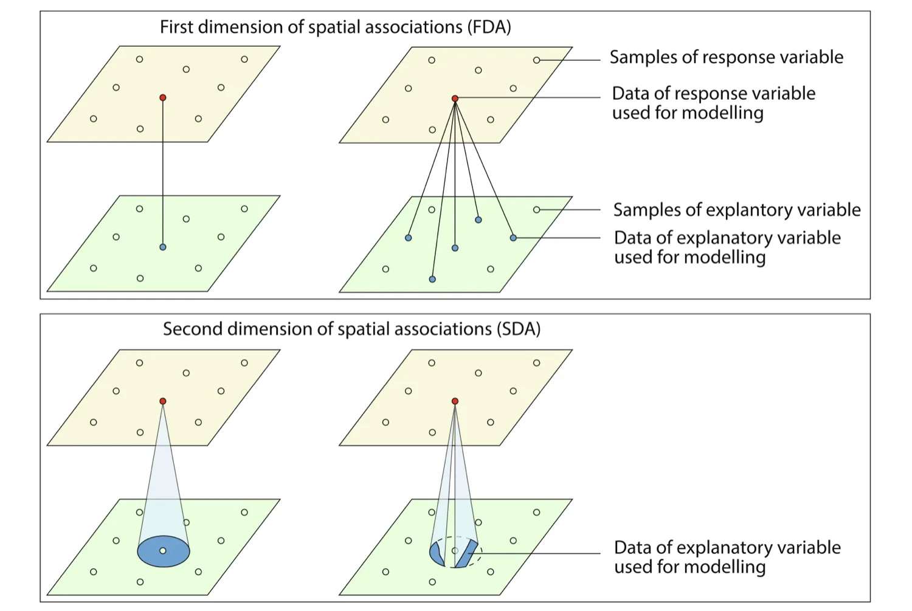
The three parts
| Part | Question | Result |
|---|---|---|
| Scales | What does each covariate look like around every sample? | One variable per covariate, buffer and quantile, and a catalogue that says what each one measures |
| Variable selection | Which of them are ranked highly in a stable way? | At most one variable per covariate, chosen with the selection of GCF: random forests on resampled spatial blocks |
| Prediction and cross-validation | What do they change on the map, and do they predict better? | Maps from a random forest with the raw covariates (the baseline, X) and with the selected variables added (X + SDA); R² of both in spatial and random folds |
When to use it
- You predict a variable at samples from gridded covariates and suspect that the surroundings matter.
- You do not know at which distance they matter: the selection reports the searching range b and the quantile τ of each variable it keeps.
- You want an honest answer to "do the new variables help?": the baseline is always shown beside them.
Where it has been used
| Field | Response y | Spatial unit | Study |
|---|---|---|---|
| Soil geochemistry | Concentration of Cr and Cu in soil | Soil sample point | Song (2022) |
| Urban parks | Sentiment score from volunteered text | Urban park | Wang et al. (2026) |
| Crop production | Wheat production | Local government area | Ren, Song and Yu (2026), with outliers in place of quantiles: see SDO |
Any response measured at locations fits, if a dense grid of covariates covers the area around them.
Keep in mindA selected variable is stable, and stability is not evidence of prediction. Whether the variables help is the cross-validation's question, and its answer can be "not clearly". R² is always 1 − SSE/SST.
2In Heterra
2.1 Prepare your data
Two layers (Part 1 shows how to add data). The samples have one row per observation. The grid has cells around the samples, with the covariates as fields.
| Layer or field | Type | In the example |
|---|---|---|
| Samples | Points, polygons or, since version 1.6.0, a table | 894 soil Zn samples |
| Response y | Number, in the samples | log_Zn = log(Zn), prepared as a field, because SDA does not transform y |
| Grid | Grid cells, points or polygons | 13,132 cells of 1 km |
| Covariates | Numbers, fields of the grid | Elevation, Slope, Aspect, Water, NDVI, pH, SOC, Road |
| Boundary (optional) | A polygon layer | sda_boundary: the outline on the prediction maps, which show only the cells inside it. It changes no result. |
The covariates may also be fields of the samples, under the same names. A sample without a covariate's field gets the value of the nearest grid cell that has one, and the catalogue says so. The example is the data of the GOS tutorial, from the Leonora district, Western Australia.
2.2 Run the example, step by step
Open the tool from the Toolbox (Spatial pattern → SDA), click Tutorial, then Load Example. The samples, the grid and the boundary appear on the map, and the panel on the right is filled in for you.
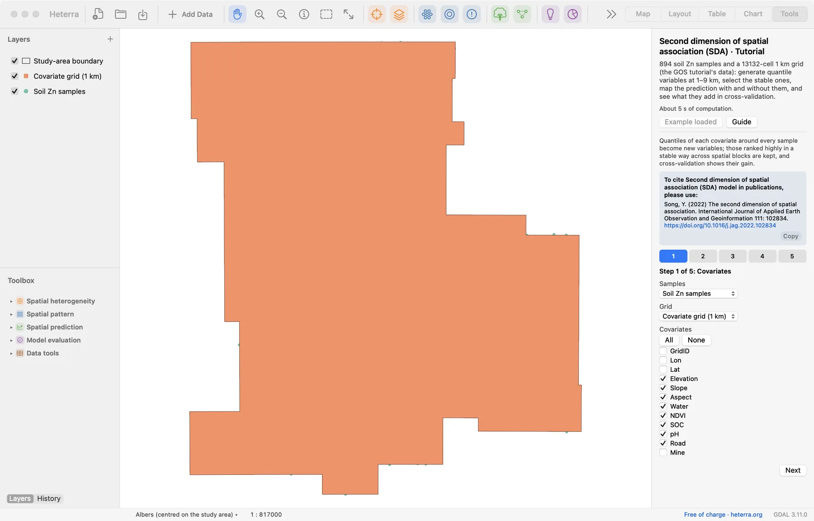
The panel has five steps, and three of them compute: steps 2, 4 and 5 each have a Run button, and each run needs the one before it. A tick on a step's number says that it has been run. The pictures show the panel after the runs.
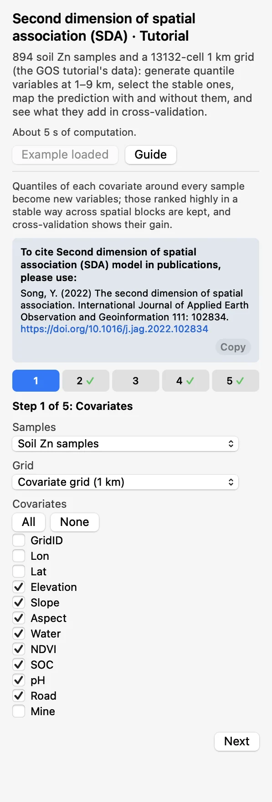
CovariatesChoose the Samples, the Grid and the eight covariates. Click Next.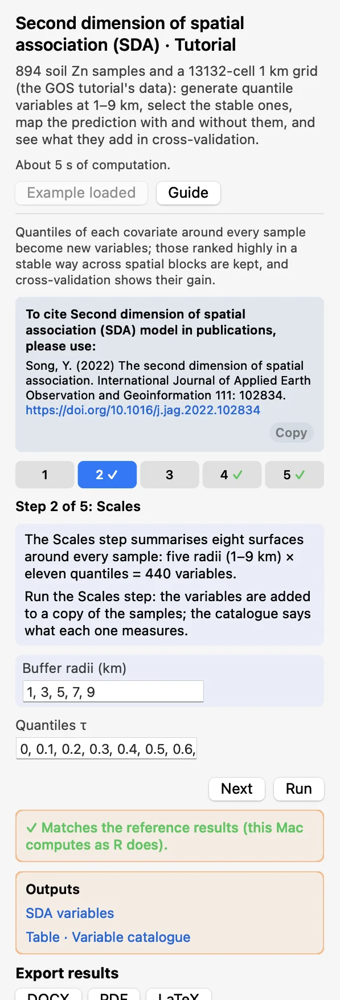
ScalesKeep the buffers 1, 3, 5, 7, 9 km and the quantiles 0, 0.1, …, 1. Click Run: a copy of the samples gets 440 new fields.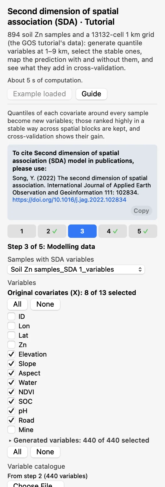
Modelling dataThat copy, the catalogue of step 2 and y =log_Zn. The eight covariates are the Original covariates (X); all 440 are ticked under Generated variables.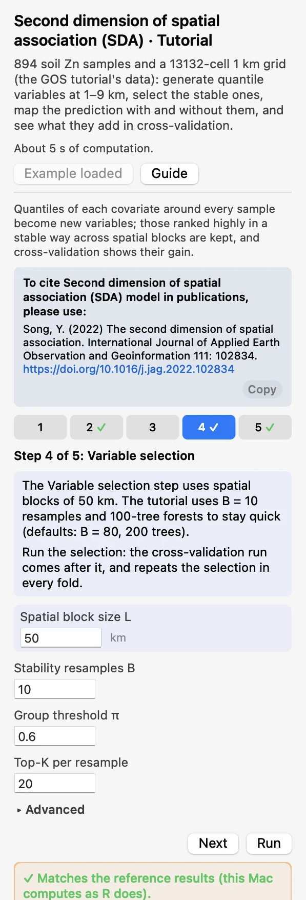
Variable selectionBlock size 50 km, B = 10 resamples. Click Run; it cannot be skipped, because step 5 runs after it.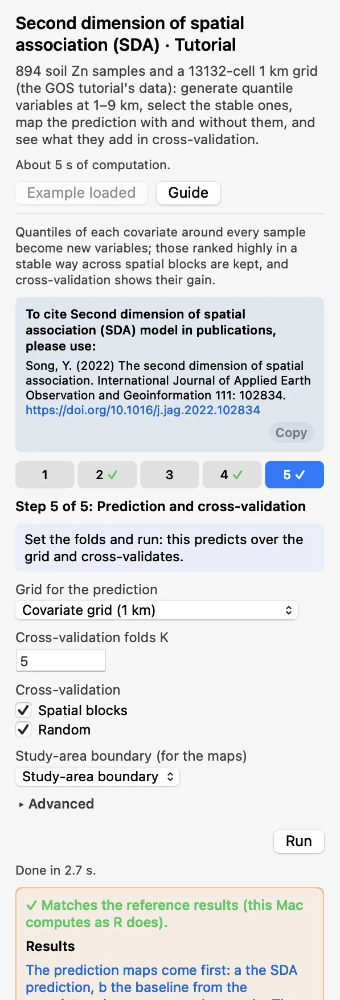
Prediction and cross-validation5 folds, Spatial blocks and Random. Click Run (a few seconds).
The tutorial uses B = 10 resamples, 100-tree selection forests and 200-tree random forests to stay quick; the defaults are B = 80, 200 and 500 trees. After the selection the Chart page shows the selected variables, and after the last run the prediction maps. The panel lists the results under Outputs, and a green line says that they match the reference results computed with R.
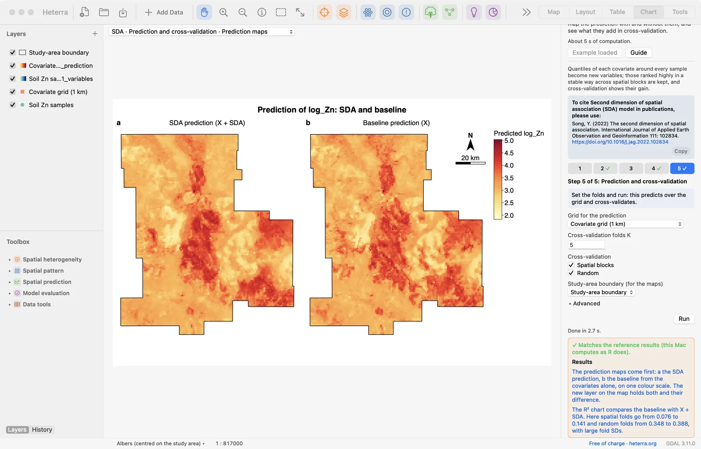
2.3 With your own data
- Add the samples and the grid (Add Data), open SDA from the Toolbox and choose them in step 1. The grid needs every covariate as a field.
- Choose the buffers for the distances at which you expect the surroundings to act, in km. Variables multiply (covariates × buffers × quantiles): with few samples, use fewer.
- Choose a block size that leaves several blocks per fold (here 50 km gives 8 blocks). With fewer blocks than folds, some folds stay empty.
- Keep the defaults for real analyses: B = 80, 200 selection trees, 500 random-forest trees.
- The response is not offered among the variables, and a variable generated from it is refused: a model given y to predict y says nothing.
- Any layer is converted to WGS 84 and the buffers are great-circle distances in km. The spatial blocks are in km after an automatic Albers projection.
- For a table without geometry, two fields appear below the layer and must be chosen: Longitude (WGS84 degrees) and Latitude (WGS84 degrees). The values are used as they are. A step that takes the table made by an earlier step asks for the two fields again.
- When the grid is a polygon layer, the prediction maps draw its polygons, coloured by value.
- A grid cell with a missing value is skipped. A sample with no cell inside a buffer gets NA, and that variable is left out of the selection and the cross-validation with a warning; if all are left out, the run stops. A raw covariate with a missing value at the samples stops the run.
- Every selected variable is generated at every grid cell, so the time grows with the number of cells and the size of the neighbourhood: about a second per variable at 100,000 cells and 9 km.
- Column names, category values and file names are best written with English letters, digits and underscores.
3Reading the results
Read the results in this order: the selected variables (what was kept, and at which scale?), the prediction maps (what do they change?), then the cross-validation and the folds table (is the change an improvement?), and last the scatter of observed against predicted values.
3.1 Selected variables
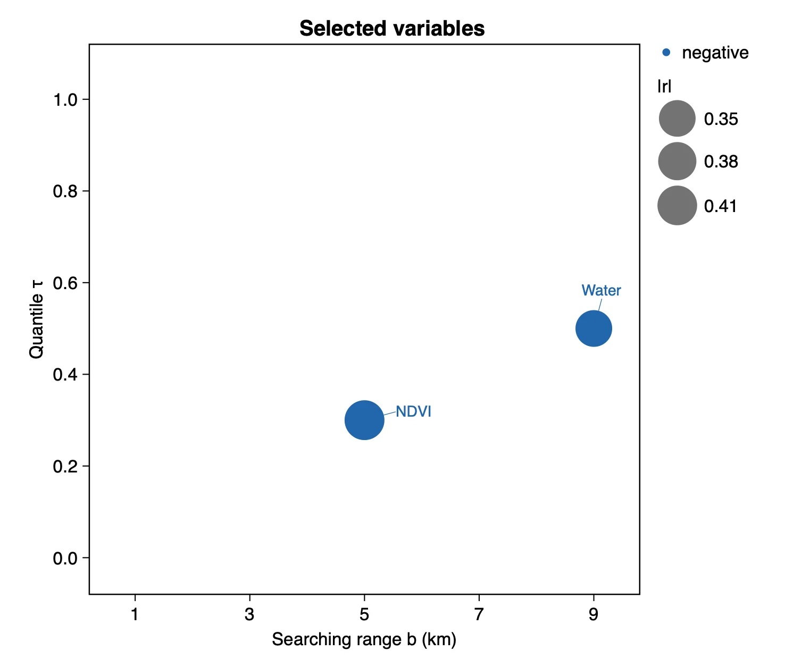
What it shows. The variables the selection kept. The area of a bubble is |r| and its colour the sign of r, where r is the correlation between the variable and y over the samples (table Selected variables and their correlation with y). The eight raw covariates are always kept and are not drawn.
| Variable | Covariate | b (km) | τ | r | Frequency |
|---|---|---|---|---|---|
| NDVI_b5t0.3 | NDVI | 5 | 0.3 | −0.41 | 1.0 |
| Water_b9t0.5 | Water | 9 | 0.5 | −0.35 | 0.4 |
How to read it. A covariate's variables form one group, and each group that passes keeps one variable. Two of the eight groups passed the threshold π = 0.6 here. The table Selected variables gives every variable's frequency: the share of the resamples in which it was among the 20 most important generated variables. NDVI_b5t0.3 was there in all ten. For Water the group passed (one of its variables was there in 8 of 10 resamples) and Water_b9t0.5 itself in 4 of 10. Several other NDVI variables also have a frequency of 1.0 (NDVI_b5t0.4, NDVI_b7t0.5, NDVI_b9t0.2), so read the result as "NDVI within about 5 to 9 km, lower to middle quantiles" and not as one exact scale.
"Second-dimension variables were generated as quantiles (τ = 0, 0.1, …, 1) of eight covariates within 1, 3, 5, 7 and 9 km of each sample (Song 2022), 440 in total. The stability selection kept two: the 0.3 quantile of NDVI within 5 km (r = −0.41 with log Zn) and the median of Water within 9 km (r = −0.35)."
3.2 Prediction maps
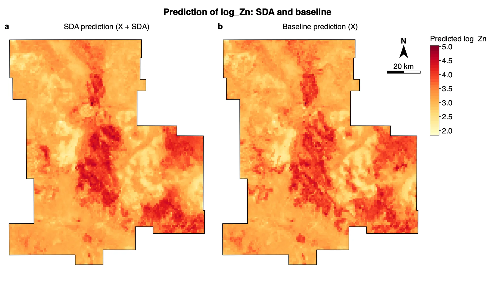
What it shows. Two random forests fitted on all samples and applied to every grid cell. The selected variables are generated at the cells as they were at the samples; a cell lies at distance 0 from itself, so it is in its own neighbourhoods. A new layer on the map holds pred_base, pred_sda and pred_diff; a cell with a missing value of a model variable is empty.
How to read it. Both maps have the same broad pattern: high predicted values in the centre and the south-east. Map a is smoother and its high areas are more compact, because its two extra variables are neighbourhood summaries; map b is more speckled. The maps show what the variables change, not that the change is right: that is the R² chart's question.
"Figure X compares the prediction of log Zn from the eight covariates alone with the prediction that adds the two second-dimension variables. Both show the same main pattern; the second is spatially smoother."
3.3 Cross-validated R²
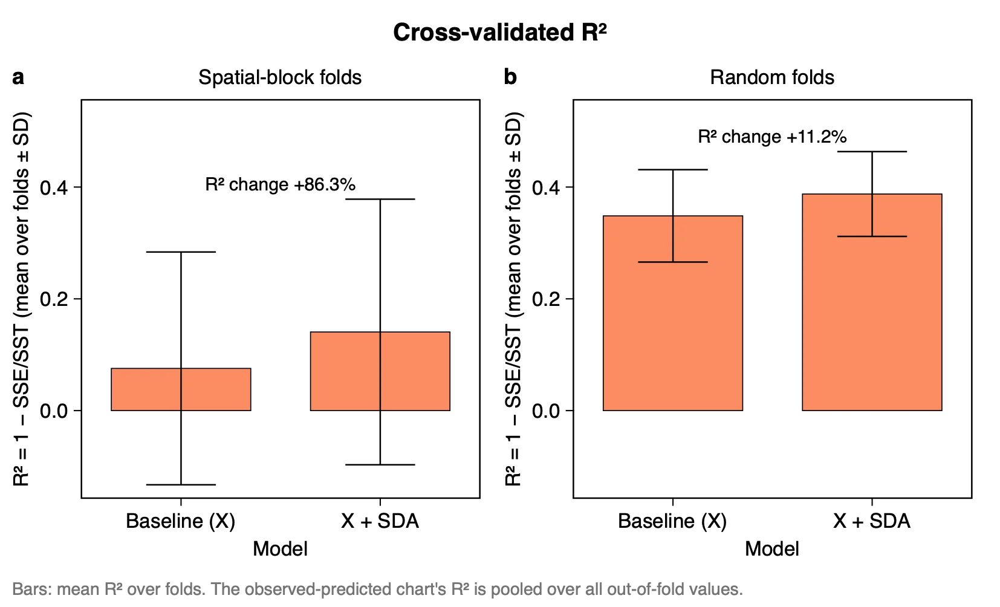
What it shows. For each kind of fold, the baseline against X + SDA: mean R² over the folds (R² = 1 − SSE/SST) ± SD, with the change written above the bars as a percentage of the baseline. The selection is repeated in every fold, so the test samples never choose the variables.
| Folds | R² baseline (SD) | R² X + SDA (SD) | RMSE baseline | RMSE X + SDA |
|---|---|---|---|---|
| Spatial blocks | 0.076 (0.208) | 0.141 (0.238) | 0.690 | 0.661 |
| Random | 0.348 (0.083) | 0.388 (0.076) | 0.642 | 0.623 |
How to read it. The spatial gain is large in per cent (+86.3%) because the baseline is small, and the fold SDs (about 0.2) are larger than the gain (0.065). Read the table Cross-validation by fold before quoting a percentage:
| Spatial fold | Test samples | R² baseline | R² X + SDA |
|---|---|---|---|
| 1 | 235 | 0.075 | 0.054 |
| 2 | 166 | 0.185 | 0.317 |
| 3 | 297 | 0.179 | 0.312 |
| 4 | 168 | 0.222 | 0.260 |
| 5 | 28 | −0.284 | −0.239 |
X + SDA is higher in four of the five spatial folds and lower in one. Fold 5 has only 28 test samples and a negative R² for both models (worse than predicting the mean); it pulls both means down and makes the SDs large. Spatial folds are the stricter test, because the test samples lie in blocks the model has not seen; random folds give higher values for both models. With the defaults (B = 80, 200 and 500 trees) the result is close: spatial 0.076 → 0.152, random 0.343 → 0.391.
Not the published resultThe public SDA code reports R² 0.3325 against 0.2752 for the paper's Cr case, with VIF selection and one 70/30 split. Here the selection is GCF's and the validation K-fold, on another data set, so the numbers do not compare.
"In five-fold cross-validation with 50 km spatial blocks, adding the second-dimension variables raised the mean R² from 0.076 (SD 0.208) to 0.141 (SD 0.238), and in random folds from 0.348 (SD 0.083) to 0.388 (SD 0.076). The model with the variables was better in four of five spatial folds, but the gain is smaller than the variation between folds."
3.4 Observed vs predicted
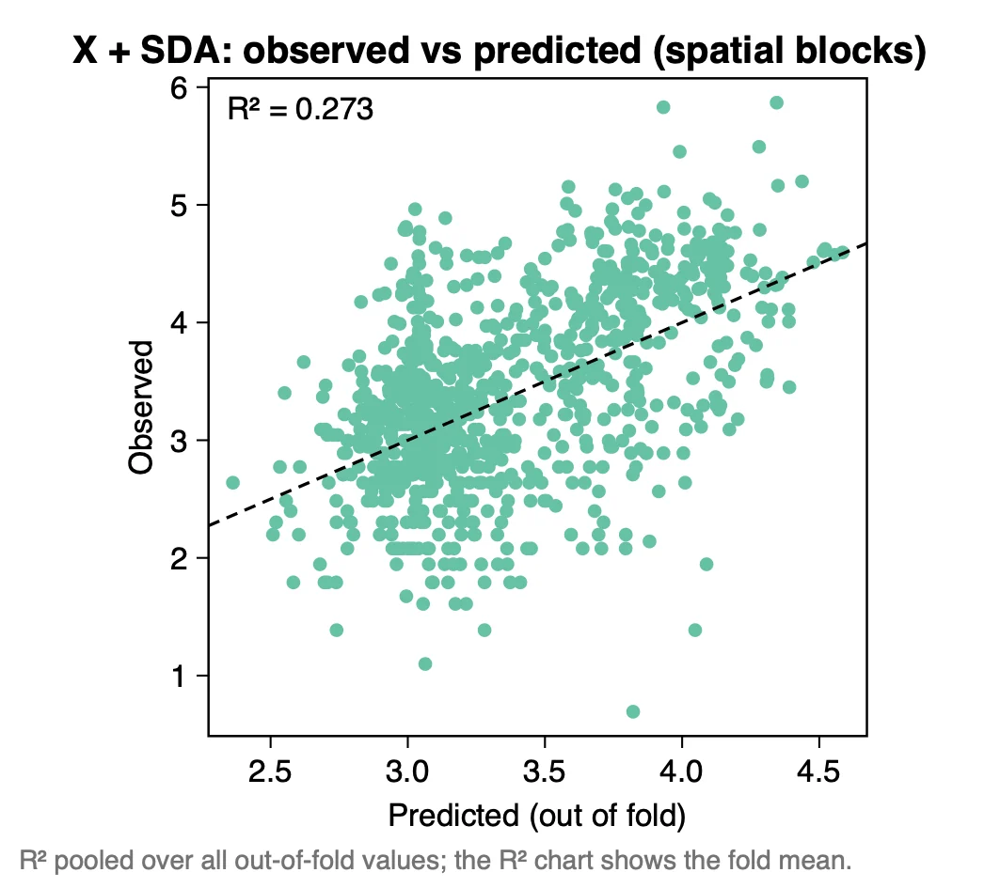
What it shows. One point per sample: its observed y against the prediction made when its fold was left out. The printed R² (0.273) is pooled over all out-of-fold values.
How to read it. The pooled R² (0.273; baseline 0.199) is not the mean over folds (0.141): the pooled value is computed once over all 894 predictions, the fold mean gives each fold the same weight, and so the small fold 5 counts for a fifth of it. Say which one you report. The predictions cover a narrower range (about 2.4 to 4.6) than the observations (about 0.7 to 5.9): the lowest observed values are over-predicted and the highest under-predicted.
Export any figure from the Chart page as PDF, SVG or PNG; Data CSV saves the numbers behind it. Export results in the panel writes a report of the run (Part 1).
3.5 Reading the results together
The outputs make one argument in three steps: the surroundings of the samples hold information (which covariate, at which range and quantile), that information changes the map (where), and the cross-validation says whether the change is an improvement. Read them in this order:
- Selected variables: which covariates, searching ranges and quantiles were kept, and whether the quantiles are extremes or middles of the neighbourhood.
- Prediction maps: what the selected variables change, and where.
- Cross-validated R², with the table Cross-validation by fold: the gap between X + SDA and the baseline, and whether it holds in most folds.
- Observed vs predicted: which part of the range of y is predicted well.
What SDA is notIt is not a model of spatial autocorrelation and it does not interpolate the response: the values of y at neighbouring samples are never used. It adds variables on the explanatory side only. It can therefore be combined with kriging, as the published case does; that step is outside Heterra.
3.6 From the results to a manuscript
| Section | What to write | From Heterra |
|---|---|---|
| Methods | The definition of the variable (the quantile τ within the searching range b); the buffers and quantiles that were searched; the selection rule and its settings; the folds and the block size | The settings of the run (in the exported report) |
| Results | Follow the order of the run: which (b, τ) were selected, what they change on the map, X + SDA against the baseline on left-out samples. Every finding has a number | Figures Selected variables, Prediction maps, Cross-validated R² and Observed vs predicted; tables Selected variables and their correlation with y and Cross-validation by fold |
| Discussion | The scale that the selected searching ranges point to; why these quantiles and not others; the size of the gain beside the variation between folds; the computing cost | Table Selected variables (the frequencies of the neighbouring variables); table Cross-validation by fold |
- The selection must not see the test samples. Heterra repeats it in every fold, so report the cross-validated R², not the fit of a model on all samples.
- Check how many grid cells lie inside the smallest buffer. The quantiles τ = 0 and τ = 1 over a few cells are noise.
- The generated variables are collinear by construction: neighbouring buffers and neighbouring quantiles describe almost the same neighbourhood. Do not skip the selection, and do not read one selected (b, τ) as an exact scale.
4Exercises
Exercises 1 to 3 use the example. Exercise 4 is for your own data.
Exercise 1Read
Run the example with its settings. Which SDA variables are selected, at which searching range and quantile, and what is the sign of their correlation with log_Zn? How many variables does the X + SDA model have in all?
Answer
NDVI_b5t0.3 (5 km, τ = 0.3, r = −0.41) and Water_b9t0.5 (9 km, τ = 0.5, r = −0.35), both negative. With the eight raw covariates, which are always kept, the model has ten variables.
Exercise 2Explore
Open the table Cross-validation by fold from the Outputs. In how many of the random folds is X + SDA better than the baseline? Which spatial fold is the odd one, and why?
Answer
In four of the five random folds; in fold 4 it is slightly lower (0.335 against 0.337). Spatial fold 5 has 28 test samples, against 166 to 297 in the others, and a negative R² for both models (−0.284 and −0.239). The blocks are dealt to the folds whole, so the folds can be very unequal.
Exercise 3Interpret
A colleague writes: "SDA improves the spatial prediction of zinc by 86%." Check this against the cross-validation tables. Is the sentence justified?
Answer
No. The 86% is the change from 0.076 to 0.141 as a share of a very small baseline: the gain is 0.065 in R², and the fold SDs are 0.21 and 0.24. Report the two values with their SDs and the number of folds in which the model was better (four of five), and say that the gain lies inside the variation between folds.
Exercise 4Your data
Run SDA on your own samples and grid with the default settings (B = 80, 200 and 500 trees). Write three sentences for a results section: one on the variables selected (covariate, b, τ, sign of r), one on what they change on the prediction map, and one on the cross-validated R² of the baseline and of X + SDA in spatial folds.
Checklist
Did you give the SD over folds beside each mean R², and look at the folds table? Did you choose the block size before looking at the result, and does it leave several blocks per fold? Did you say whether an R² is the fold mean or pooled? Is the response absent from the covariates?
References
- Song, Y. (2022). The second dimension of spatial association. International Journal of Applied Earth Observation and Geoinformation 111: 102834. doi:10.1016/j.jag.2022.102834
- Wang, X., Wu, Y., Shi, T., Zhang, R., Chen, Y. & Song, Y. (2026). Explainable second-dimension spatial association between park sentiment and built-social environments. doi:10.1016/j.cities.2026.107068
- Ren, K., Song, Y. & Yu, Q. (2026). Second-dimension outliers for spatial prediction. International Journal of Geographical Information Science 40(6): 1915–1942. doi:10.1080/13658816.2025.2580414
- Song, Y. (2026). Generalized covariate field (GCF). International Journal of Geographical Information Science 40: 1–29. doi:10.1080/13658816.2026.2729719 (the selection and the cross-validation)
- R package SecDim: cran.r-project.org/src/contrib/Archive/SecDim. R package gcf (the selection and the cross-validation): cran.r-project.org/package=gcf.
- Heterra's results match SecDim 3.2, gcf 0.1.1, ranger 0.18.0 and randomForest 4.7-1.2.
Heterra guide, for version 1.6.0. © 2026 Yongze Song. Documentation and tutorial data: CC BY 4.0.